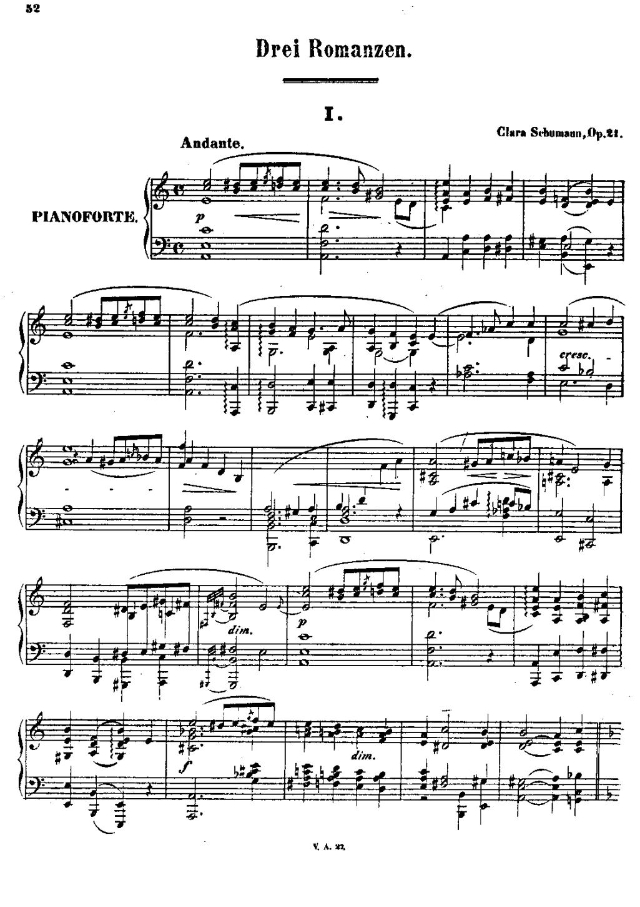

← Sandbox
All music
Clara Schumann — 3 Romances, Op.21
Performance
Three Romances, Op. 21
· Siyumeng (Cathy) Wang · 11:06
Play recording
Watch on YouTube
Sheet music
Score editions on IMSLP
Score facsimile
